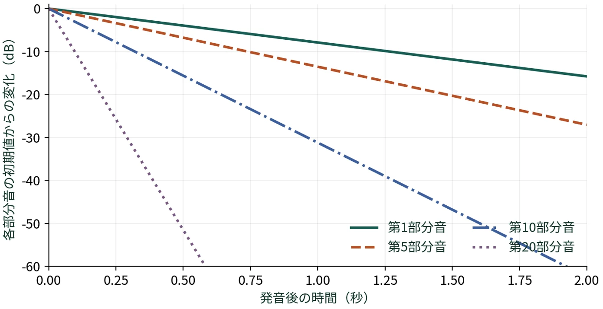

第58章 乱数の輪が弦に変わる
乱数の輪を平均し続けるだけで弦の音になる、カープラス＝ストロング合成。
この章で学ぶこと
- 遅延と平均による撥弦合成のしくみを知る
- 一周の利得から、音高と倍音ごとの減衰を計算する
- Python で鳴らし、パラメータを変えて比べる
雑音をもう一周させる
乱数をスピーカーに一度だけ送ると短い雑音が出る。同じ乱数の列を輪にして回すと、個々の値が不規則であっても輪の一周に対応する規則が生まれる。たとえば標本化周波数 Hz で200個の標本を毎回同じ順に再生すれば、波形は約4.54 msで反復する。耳が一音としてまとめうる時の尺度に、計算機の配列の長さが現れた。ところが、このままでは何秒待っても音色が変わらない。弦をはじいてから指を離したとき、鋭い発音が残響に溶けていく過程をどう得るか。
ケヴィン・カープラスとアレックス・ストロングが発表した撥弦合成の着想は、一周するたびに隣の値どうしを平均することだった。方眼紙の滑らかでない輪郭を何度もなぞり、毎回となりの点との中ほどを取ると、細かな凹凸が先に消える。時間標本に同じ操作をかければ、高域の振動が低域より早く消える。この二つの「滑らかさ」を、線形演算が空間と時間をまたいで結ぶ。弦の固有振動とデジタルフィルタをここで一緒に使う。
半標本だけ長い弦
遅延の長さを整数 、一周の損失を表す係数を 、第 標本を とする。時刻 から に短い励振を書き、それ以前をゼロとする。以後の更新式は
一周で音のどの成分が消えるか。角周波数 の複素指数を入れると、遅延は複素数 の乗算に対応する。虚数単位を とすれば、一周の複素利得 は
後の等号は括弧から をくくり出せば得られる。 では余弦は正。位相が整数周戻る条件は 。したがって第 部分音の周波数の見積りは となる。裸の配列で予測した より少し低い。位相から得たこの推定値と、有限長の減衰音のスペクトルで測るピークとの間には、減衰や測定窓に応じたずれがありうる。
では基音の予測は219.95 Hz。第 部分音の一周当たりの振幅比を と置く。振幅が初期値の千分の一になる時間を見積もるには、一周の時間 を用い、 を解けばよい。第1部分音は約7.60秒、第10部分音は約1.92秒、第20部分音は約0.58秒でこの水準に達する。全体の音量を一律に下げてもこの違いは作れない。

指が音色に書き込む情報
同じループに異なる励振を入れて比べよう。全標本が同じ値なら、初めから細かい凹凸がなく、広帯域の弦らしい発音は出にくい。実際の弦でも、弾く場所が励振するモードを選ぶ。理想弦の長さを 、弾く位置を とする。第 モードの形は に比例するので、その節に局所的な力を加えても、そのモードにする仕事はゼロである。中央を弾けば偶数次が弱くなる、という予測はここから出る。弾く道具に幅があること、駒・胴の応答、収音位置の効果まで、短い乱数列が自動的に再現するわけではない。
次の実験は Python と NumPy で実行できる。出力は1秒間の浮動小数標本である。負の添字が末尾を読むことを防ぐため、先頭に明示的にゼロを一つ置いた。
import numpy as np
fs, N, g = 44100, 200, 0.996
rng = np.random.default_rng(7)
v = np.zeros(fs + 1)
pluck = rng.uniform(-1, 1, N)
v[1:N+1] = pluck - pluck.mean()
for j in range(N + 1, len(v)):
v[j] = g * (v[j-N] + v[j-N-1]) / 2
y = v[1:]同じ乱数を使い、最初の0.1秒と最後の0.1秒を取り出す。同じ窓関数で振幅スペクトルを求め、区間ごとに基音の大きさで割ると、絶対音量の減少と倍音の相対的な減少を分けられる。次に だけを小さくする。すべての成分の減衰に損失が加わる。元の乱数を替えれば初期スペクトル自体が変わるので、条件の比較には同じ種を維持する。
架空の楽器で、本物の音楽の文法を交換する
デイヴィッド・ジャフィ《Silicon Valley Breakdown》（1982）の素材は合成された撥弦音である。作曲者は原版を四チャンネルとし、冒頭でブルーグラスと半音階的な素材を対置した。まず、規則的な刻みが聞き取りやすい箇所を探す。次に、その規則性が崩れても撥弦らしさが続くか、対照的な声部にカントリーを思わせる和声が入り込むかを聴く。同じ物理モデルで作った音に異なる演奏慣習を担わせた点が、アルゴリズムの音色見本を超える。作品で用いられた合成はジャフィとジュリアス・スミスらによる拡張を含む。
やってみよう
制作課題と解答例。 二声を同じ で発音させ、一方だけ に替える。新しい基音は Hz。二声の基音差は約1.10 Hzで、長く重なる部分では強さが毎秒約1回揺れると予測できる。うなりを明瞭にするなら基音が強く立つ励振を選び、両声を近い音量にする。どちらかの振幅が先に消えれば揺れも弱まる。次は同じ二音を交互に弾く。同時発音のうなりが途切れ、同じ周波数差が短い旋律の音程として働く。
ここだけ押さえる
- 基音はおよそ fs ÷ (N + 1/2)。
- 高い倍音ほど一周ごとに大きく減り、早く消える。
- 条件を比べるときは、乱数の種をそろえる。
この章の資料
- 原論文。漸化式からチップ上の実装までを追える。表記する遅延を決めてから本章の と照合する。Karplus & Strong, “Digital Synthesis of Plucked-String and Drum Timbres”
- 作曲者による作品解説、録音、制作についての映像。音色と様式の変化を別の軸に書き取る。David A. Jaffe, Silicon Valley Breakdown
- 平均器の位相遅延を別の図と導出で確認する。Ben Lynn, The Karplus–Strong Algorithm